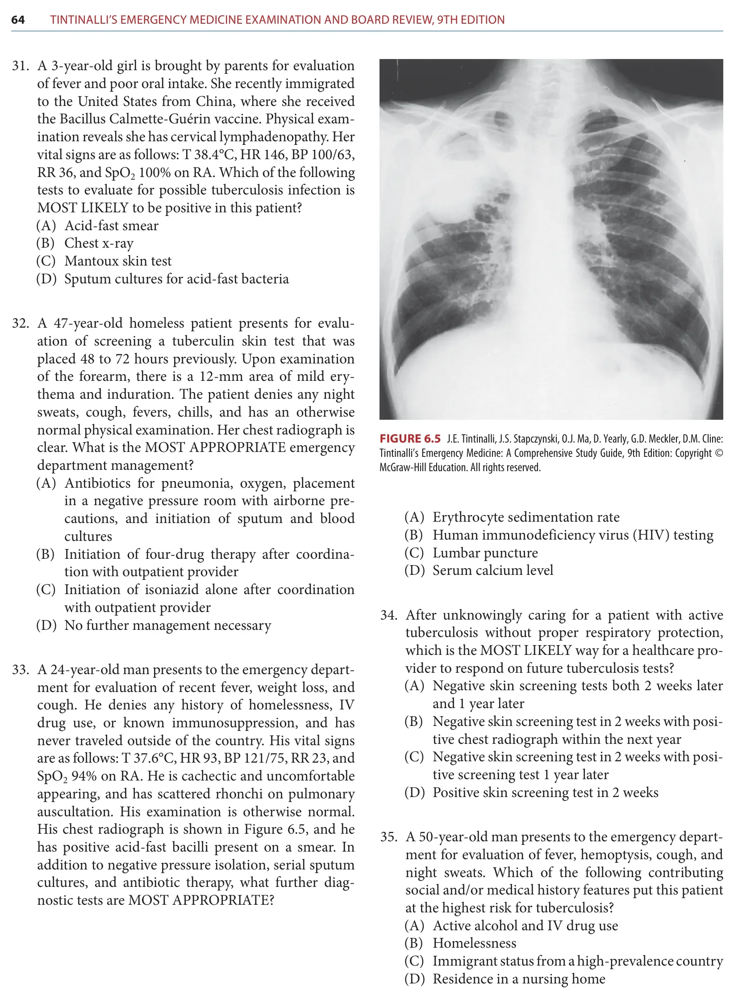
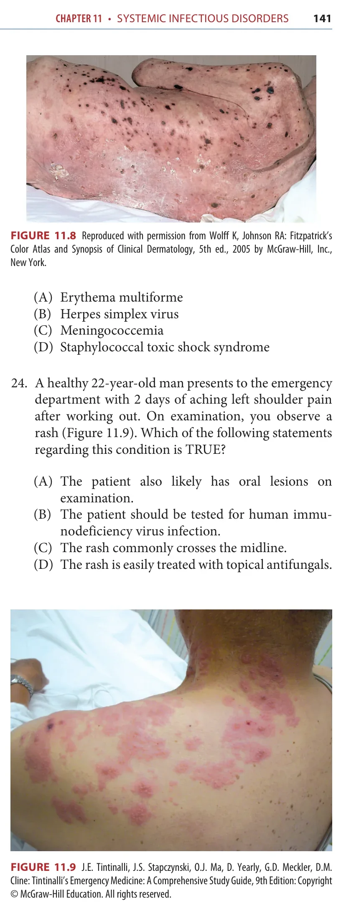
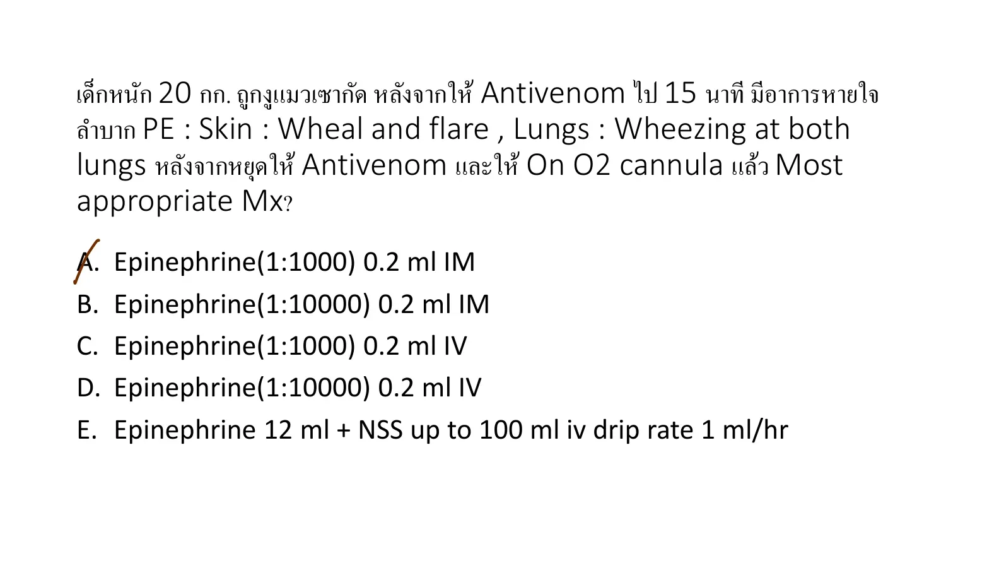

Palpable purpura, abdominal pain, arthralgia, and renal findings indicate IgA vasculitis.
A08-0004A08-Q0004solution_ready
A 12-year-old woman presented with airway obstruction secondary to laryngeal swelling. Her history was significant for episodes of recurrent facial swelling. The swelling, which often involved the lips, began suddenly without recognizable precipitating events and lasts for 2 to 3 days. What is the most useful investigation?
p31
ยังไม่ถูก
A. IgG level
ยังไม่ถูก
B. B-cell count
ยังไม่ถูก
C. T-cell count
ยังไม่ถูก
D. Nitroblue tetrazolium test
ถูกต้อง
Recurrent angioedema with airway swelling suggests hereditary angioedema; C4 is the useful screening test.
Recurrent angioedema with airway swelling suggests hereditary angioedema; C4 is the useful screening test.
A08-0005A08-Q0005solution_ready
Male 11 yr present with periorbital and facial edema Hx of 5 yr pta swelling of hand and feet duration 3 day each remission by home medicine FHx of mother having this symptom & his elder brother die of respiratory distress The patient feel abdominal pain but no rash. What is the most etiology?
crop
ถูกต้อง
Recurrent familial angioedema without urticaria and abdominal pain is hereditary angioedema mediated by bradykinin.
Recurrent familial angioedema without urticaria and abdominal pain is hereditary angioedema mediated by bradykinin.
A08-0006A08-Q0006solution_ready
144. Case female 5 ys no u/d 1st presentation severe knee pain Hx acute pharyngitis treatment Amoxicillin. V/S BT 37.8 BP 85/60 RR 24 satO2 95%. GA: alert HEENT: injected pharyngitis, Abd no hepatosplenomegaly RS good air entry clear both lung Skin: erythematous maculopapular rash, mild pruritic rash. Ext no pitting edema. What mechanism of pathology
crop
ยังไม่ถูก
A. IgE
ยังไม่ถูก
B. IgG
ยังไม่ถูก
C. Cellular
ถูกต้อง
Fever/arthralgia or severe knee pain plus maculopapular pruritic rash after amoxicillin is most consistent with a serum sickness-like reaction. The classic mechanism tested is type III hypersensitivity/immune-complex mediated inflammation.
Fever/arthralgia or severe knee pain plus maculopapular pruritic rash after amoxicillin is most consistent with a serum sickness-like reaction. The classic mechanism tested is type III hypersensitivity/immune-complex mediated inflammation.
A08-0007A08-Q0007solution_ready
121. เด็กถูกผึ้งต่อยมา เหนื่อย เขียว sat drop 85 bp drop hr ช้า lung wheeze: anaphylaxis ให้ o2 กับ adrenaline im แล้ว แต่ยังมีเขียว cyanosis sat drop 88 EKG hr ช้า ทำไรต่อ
crop
ยังไม่ถูก
A. ติด pace
ยังไม่ถูก
B. ......
ถูกต้อง
Persistent cyanosis with bradycardia despite IM epinephrine and oxygen indicates impending respiratory failure requiring airway control.
Anaphylaxis is a type I immediate hypersensitivity reaction. Allergen exposure cross-links IgE on mast cells and basophils, causing mediator release such as histamine; this best matches mast-cell activation rather than IgG-mediated disease.
Anaphylaxis is a type I immediate hypersensitivity reaction. Allergen exposure cross-links IgE on mast cells and basophils, causing mediator release such as histamine; this best matches mast-cell activation rather than IgG-mediated disease.
A08-0010A08-Q0010solution_ready
59. ญ 28 ปี Dx secondary syphilis ได้ benzathine pen G เมื่อวาน Today มาด้วย malaise, ปวดข้อ, ไข้ V/s BT 38.9 อย่างอื่น WNL PE: mp rash palm and sole ถาม Dx
crop
ยังไม่ถูก
A. Serum sickness
ยังไม่ถูก
B. Drug fever
ถูกต้อง
Fever, malaise, arthralgia, and rash worsening within 24 hours of syphilis treatment is Jarisch-Herxheimer reaction.
Recurrent infections beginning in infancy with diarrhea and marked lymphopenia suggests SCID.
A08-0013A08-Q0013solution_ready
Q100. What condition should be considered in a patient with no known medical history who presents with newly diagnosed severe seborrheic dermatitis?
ยังไม่ถูก
A. Hodgkin’s lymphoma
ถูกต้อง
B. Human immunodeficiency virus
ยังไม่ถูก
C. Small cell carcinoma
ยังไม่ถูก
D. Systemic lupus erythematosus
Source: Old special HTML: A09 | Page/slot: old-special | Marker: a09-mcgraw-board-review-q100
Reference: Source: Old special HTML: A09 | Page/slot: old-special | Marker: a09-mcgraw-board-review-q100
ซ่อนเฉลยเปิดเฉลยเฉลยA08-0013 answer
Answer
B
A08-0014A08-Q0014solution_ready
Q108. Repeat human immunodeficiency virus (HIV) antibody testing after a sexual assault is recommended at what intervals after the baseline testing at emergency department presentation?
ยังไม่ถูก
A. 3 months and 6 months
ยังไม่ถูก
B. 3 months, 6 months, and 1 year
ถูกต้อง
C. 6 weeks, 3 months, and 6 months
ยังไม่ถูก
D. 6 weeks and 6 months
Source: Old special HTML: A09 | Page/slot: old-special | Marker: a09-mcgraw-board-review-q108
Reference: Source: Old special HTML: A09 | Page/slot: old-special | Marker: a09-mcgraw-board-review-q108
ซ่อนเฉลยเปิดเฉลยเฉลยA08-0014 answer
Answer
C
A08-0015A08-Q0015solution_ready
Q109. Which of the following BEST describes the Centers for Disease Control and Prevention (CDC) guidelines for prophylaxis of sexually transmitted infections following sexual assault?
ยังไม่ถูก
A. Human papilloma virus (HPV) vaccination is not recommended.
ยังไม่ถูก
B. Postexposure hepatitis B vaccination including hepatitis B immune globulin (HBIG) is recommended if assailant is unknown and survivor is not previously vaccinated.
ยังไม่ถูก
C. Human immunodeficiency virus (HIV) postexposure prophylaxis (PEP) should be given to all sexual assault victims in the ED.
ถูกต้อง
D. Empiric antimicrobial regimen should include coverage for chlamydia, gonorrhea and trichomonas.
Source: Old special HTML: A09 | Page/slot: old-special | Marker: a09-mcgraw-board-review-q109
Reference: Source: Old special HTML: A09 | Page/slot: old-special | Marker: a09-mcgraw-board-review-q109
ซ่อนเฉลยเปิดเฉลยเฉลยA08-0015 answer
Answer
D
A08-0016A08-Q0016solution_ready
Q13. A 24-year-old man presents with fever, weight loss, and cough. He is cachectic and uncomfortable appearing, and his chest radiograph is shown in the source figure. Acid-fast bacilli are present on smear. In addition to negative pressure isolation, serial sputum cultures, and antibiotic therapy, what further diagnostic test is MOST APPROPRIATE?

Source image used in the McGraw question.
ยังไม่ถูก
A. Erythrocyte sedimentation rate
ถูกต้อง
B. Human immunodeficiency virus (HIV) testing
ยังไม่ถูก
C. Lumbar puncture
ยังไม่ถูก
D. Serum calcium level
Source: Old special HTML: A09 | Page/slot: old-special | Marker: a09-mcgraw-board-review-q13
Reference: Source: Old special HTML: A09 | Page/slot: old-special | Marker: a09-mcgraw-board-review-q13
ซ่อนเฉลยเปิดเฉลยเฉลยA08-0016 answer
Answer
B
A08-0017A08-Q0017solution_ready
Q54. A healthy 22-year-old man presents to the emergency department with 2 days of aching left shoulder pain after working out. On examination, you observe a rash (Figure 11.9). Which of the following statements regarding this condition is TRUE?

Source image used in the McGraw question.
ยังไม่ถูก
A. The patient also likely has oral lesions on examination.
ถูกต้อง
B. The patient should be tested for human immunodeficiency virus infection.
ยังไม่ถูก
C. The rash commonly crosses the midline.
ยังไม่ถูก
D. The rash is easily treated with topical antifungals.
Source: Old special HTML: A09 | Page/slot: old-special | Marker: a09-mcgraw-board-review-q54
Reference: Source: Old special HTML: A09 | Page/slot: old-special | Marker: a09-mcgraw-board-review-q54
ซ่อนเฉลยเปิดเฉลยเฉลยA08-0017 answer
Answer
B
A08-0018A08-Q0018solution_ready
Q58. In a human immunodeficiency virus infectionpositive patient, thrush is likely to occur when the CD4+ T-cell count drops below what level?
ยังไม่ถูก
A. 200 cells/mm3
ถูกต้อง
B. 500 cells/mm3
ยังไม่ถูก
C. 700 cells/mm3
ยังไม่ถูก
D. 900 cells/mm3
Source: Old special HTML: A09 | Page/slot: old-special | Marker: a09-mcgraw-board-review-q58
Reference: Source: Old special HTML: A09 | Page/slot: old-special | Marker: a09-mcgraw-board-review-q58
ซ่อนเฉลยเปิดเฉลยเฉลยA08-0018 answer
Answer
B
A08-0019A08-Q0019solution_ready
Q59. A 37-year-old man with human immunodeficiency virus presents to the emergency department with two days of fever and a new-onset seizure tonight. After completing a thorough physical and neuro logic examination, what is the NEXT BEST step in management?
ถูกต้อง
A. Head CT
ยังไม่ถูก
B. Intravenous lorazepam
ยังไม่ถูก
C. Lumbar puncture
ยังไม่ถูก
D. Measure CD4+ T-cell counts
Source: Old special HTML: A09 | Page/slot: old-special | Marker: a09-mcgraw-board-review-q59
Reference: Source: Old special HTML: A09 | Page/slot: old-special | Marker: a09-mcgraw-board-review-q59
ซ่อนเฉลยเปิดเฉลยเฉลยA08-0019 answer
Answer
A
A08-0020A08-Q0020solution_ready
Q60. A 47-year-old woman with human immunodeficiency virus infection presents to the emergency depart ment with 2 days of headache, increasing left-sided weakness, and new-onset seizure tonight. Contrastenhanced CT scan shows multiple ring-enhancing lesions with surrounding areas of edema. Which of the following statements regarding this condition is TRUE?
ยังไม่ถูก
A. Serologic tests are useful in making or excluding the diagnosis.
ถูกต้อง
B. Symptoms may also include fever and altered mental status.
ยังไม่ถูก
C. This condition commonly occurs in patients with normal CD4+ cell counts.
ยังไม่ถูก
D. This patient can be discharged with oral sulfa methoxazole-trimethoprim and dexamethasone.
Source: Old special HTML: A09 | Page/slot: old-special | Marker: a09-mcgraw-board-review-q60
Reference: Source: Old special HTML: A09 | Page/slot: old-special | Marker: a09-mcgraw-board-review-q60
ซ่อนเฉลยเปิดเฉลยเฉลยA08-0020 answer
Answer
B
A08-0021A08-Q0021solution_ready
Q61. A 55-year-old man with human immunodeficiency virus infection presents to the emergency department with 2 weeks of hemoptysis, night sweats, prolonged fevers, weight loss, and anorexia. Which of the follow ing statements regarding this condition is TRUE?
ยังไม่ถูก
A. Approximately 50% of new cases in the United States occur in HIV-infected persons.
ยังไม่ถูก
B. Definitive diagnosis is commonly made through positive blood cultures.
ยังไม่ถูก
C. Frequently occurs in patients with CD4+ T-cell counts less than 100 cells/mm3.
ถูกต้อง
D. Negative purified protein derivative skin test results are common among HIV patients.
Source: Old special HTML: A09 | Page/slot: old-special | Marker: a09-mcgraw-board-review-q61
Reference: Source: Old special HTML: A09 | Page/slot: old-special | Marker: a09-mcgraw-board-review-q61
ซ่อนเฉลยเปิดเฉลยเฉลยA08-0021 answer
Answer
D
A08-0022A08-Q0022solution_ready
Q91. A 28-year-old man has oral pain, foul metallic taste, halitosis, gingival bleeding, punched-out interdental papillae, fever, and mobile teeth. What is the most significant predisposing factor for this condition?
ยังไม่ถูก
A. Alcohol abuse
ยังไม่ถูก
B. Caucasian descent
ถูกต้อง
C. Human immunodeficiency virus infection
ยังไม่ถูก
D. Tobacco use
Source: Old special HTML: A09 | Page/slot: old-special | Marker: a09-mcgraw-board-review-q91
Reference: Source: Old special HTML: A09 | Page/slot: old-special | Marker: a09-mcgraw-board-review-q91
ซ่อนเฉลยเปิดเฉลยเฉลยA08-0022 answer
Answer
C
A08-0023A08-Q0023solution_ready
Q8. Case female 5 years old, no U/D, presented with severe knee pain after acute pharyngitis treated with amoxicillin. V/S: BT 37.8, BP 85/60, RR 24, satO2 95%. HEENT: injected pharyngitis. Skin: erythematous maculopapular mildly pruritic rash. What is the most likely mechanism of pathology? . IgE . IgG . Cellular . Immune complex . Spontaneous reaction
Source: Old special HTML: A09 | Page/slot: old-special | Marker: a09-pediatric-exanthem-vaccine-fever-q8
Reference: Source: Old special HTML: A09 | Page/slot: old-special | Marker: a09-pediatric-exanthem-vaccine-fever-q8
Source: Old special HTML: A09 | Page/slot: old-special | Marker: a09-sti-genital-ulcer-gonococcal-q4
Reference: Source: Old special HTML: A09 | Page/slot: old-special | Marker: a09-sti-genital-ulcer-gonococcal-q4
ซ่อนเฉลยเปิดเฉลยเฉลยA08-0024 answer
Answer
C
A08-0025A08-Q0025solution_ready
Q9. เด็กหนัก 20 กก. ถูกงูแมวเซากัด หลังจากให้Antivenom ไป 15 นาที มีอาการหายใจ ล าบาก PE : Skin : Wheal and flare , Lungs : Wheezing at both lungs หลังจากหยุดให้Antivenom และให้On O2 cannula แล้ว Most appropriate Mx?

Test for Snake bite ,.pdf, p.2
ถูกต้อง
Wheal/flare with bilateral wheezing soon after antivenom is anaphylaxis. In a 20 kg child, IM epinephrine 0.01 mg/kg of 1 mg/mL (1:1000) equals 0.2 mg, or 0.2 mL, given IM in the thigh. IV epinephrine is not the first-line route for this stable initial treatment choice.
ยังไม่ถูก
B. Epinephrine(1:10000) 0.2 ml IM
ยังไม่ถูก
C. Epinephrine(1:1000) 0.2 ml IV
ยังไม่ถูก
D. Epinephrine(1:10000) 0.2 ml IV
ยังไม่ถูก
E. Epinephrine 12 ml + NSS up to 100 ml iv drip rate 1 ml/hr
Source: Old special HTML: A16 | Page/slot: old-special | Marker: a16-envenomation-snake-marine-q9
Reference: Source: Old special HTML: A16 | Page/slot: old-special | Marker: a16-envenomation-snake-marine-q9
ซ่อนเฉลยเปิดเฉลยเฉลยA08-0025 answer
Answer
A. Epinephrine(1:1000) 0.2 ml IM
Rationale
Wheal/flare with bilateral wheezing soon after antivenom is anaphylaxis. In a 20 kg child, IM epinephrine 0.01 mg/kg of 1 mg/mL (1:1000) equals 0.2 mg, or 0.2 mL, given IM in the thigh. IV epinephrine is not the first-line route for this stable initial treatment choice.
ACE-inhibitor angioedema is bradykinin-mediated from impaired bradykinin degradation. Isolated facial/lip swelling after enalapril without fever, wheeze, urticaria, or diarrhea fits bradykinin angioedema rather than histamine-mediated allergy.
ยังไม่ถูก
C. Prostaglandin
ยังไม่ถูก
D. TNF
ยังไม่ถูก
E. Histamine
Source: Old special HTML: A16 | Page/slot: old-special | Marker: a16-medication-and-antidote-q37
Reference: Source: Old special HTML: A16 | Page/slot: old-special | Marker: a16-medication-and-antidote-q37
ซ่อนเฉลยเปิดเฉลยเฉลยA08-0026 answer
Answer
B. Bradykinin
Rationale
ACE-inhibitor angioedema is bradykinin-mediated from impaired bradykinin degradation. Isolated facial/lip swelling after enalapril without fever, wheeze, urticaria, or diarrhea fits bradykinin angioedema rather than histamine-mediated allergy.
A08-0027A08-Q0027solution_ready
Q15. A 24-year-old woman presents to the emergency department with a chief complaint of tongue and lip swelling. She reports that she had a minor fall off a step stool yesterday evening but without any serious injury. She additionally reports that she feels as if she is having some swelling in her throat and feels slightly dyspneic. Her vital signs are the following: T 97.9°F, HR 80, BP 110/80, and RR of 19. On examination, she has moderate swelling of her upper and lower lip as well as her tongue. Despite this, she is able to speak full sentences easily. Her lungs are clear to auscultation bilaterally. She has no skin rashes on examination. She takes no medications. There have been no new environmental exposures. She does report however that these exact symptoms have happened once in the past and that she was recently diagnosed with hereditary angioedema. Which of the following treatments will shorten the duration of her attack?
Hereditary angioedema is bradykinin-mediated and does not respond well to corticosteroids or epinephrine. Specific on-demand therapies such as C1-inhibitor concentrate, icatibant, or ecallantide are preferred when available; among the listed choices, fresh frozen plasma can shorten an acute attack because it provides C1 inhibitor.
Source: Old special HTML: A16 | Page/slot: old-special | Marker: a16-metal-and-environmental-tox-q15
Reference: Source: Old special HTML: A16 | Page/slot: old-special | Marker: a16-metal-and-environmental-tox-q15
ซ่อนเฉลยเปิดเฉลยเฉลยA08-0027 answer
Answer
D. Transfusion of fresh frozen plasma
Rationale
Hereditary angioedema is bradykinin-mediated and does not respond well to corticosteroids or epinephrine. Specific on-demand therapies such as C1-inhibitor concentrate, icatibant, or ecallantide are preferred when available; among the listed choices, fresh frozen plasma can shorten an acute attack because it provides C1 inhibitor.
A08-0028A08-Q0028solution_ready
Case male 30 yr DM type I well controlled on insulin present with painless hematuria, history of mild URI UA RBC + protein A. IgA nephropathy B. DM C. HSP D. BPH
A. IgA nephropathy / IgA vasculitis renal involvement
Rationale
Hematuria and proteinuria after URI, or purpura with abdominal pain and renal findings, points to IgA-mediated disease.
A08-0029A08-Q0029solution_ready
หญิง 18 yr มีอาการปวดท้อง cramping pain 5 วัน มีผื่นบริเวณแขนขา ขาบวมทั้งสองข้าง UA: protein +, RBC 20, WBC 30 renal biopsy ถาม patho A. IgA nephropathy B. Type 4 lupus nephritis C. minimal change nephropathy D. RPGN E. post strep glomerulonephritis
A. IgA nephropathy / IgA vasculitis renal involvement
Rationale
Hematuria and proteinuria after URI, or purpura with abdominal pain and renal findings, points to IgA-mediated disease.
A08-0030A08-Q0030solution_ready
71. Eleven teenage boys and girls were brought to an emergency department over a 4-hour period one mid-afternoon in September. They were acquaintances from school who were at a party together. All 11 displayed various stages of agitation and delirium. Ten of the teens were hallucinating and several described seeing bugs all over them and throughout the room. They were disoriented and babbling incoherently. Physical examination revealed elevated pulse rate in all (up to 180/minute in one case), dilated pupil size, and agitation requiring restraints for 6 of the 11 patients. All were noted to have slight tachycardia, dry skin, and decreased bowel sounds. One patient was disoriented but not agitated, and she received oral charcoal in the emergency department. The rest were given charcoal by NG tube. Nine of the 11 were judged to be sufficiently disoriented after several hours that they required admission. The other two were hallucinating when admitted to the emergency department but recovered there and did not require admission for further observation. After admission the 9 patients received primarily supportive care and were discharged after 2 days.
What is a possible substance involved in this poisoning?
Cutaneous findings are the most common manifestations of anaphylaxis. Urticaria is more common than diarrhea, dyspnea, or hypotension as the presenting symptom group.
Source: Old special HTML: A16 | Page/slot: old-special | Marker: a16-medication-and-antidote-q38
Reference: Source: Old special HTML: A16 | Page/slot: old-special | Marker: a16-medication-and-antidote-q38
ซ่อนเฉลยเปิดเฉลยเฉลยA08-0031 answer
Answer
D. Urticaria
Rationale
Cutaneous findings are the most common manifestations of anaphylaxis. Urticaria is more common than diarrhea, dyspnea, or hypotension as the presenting symptom group.